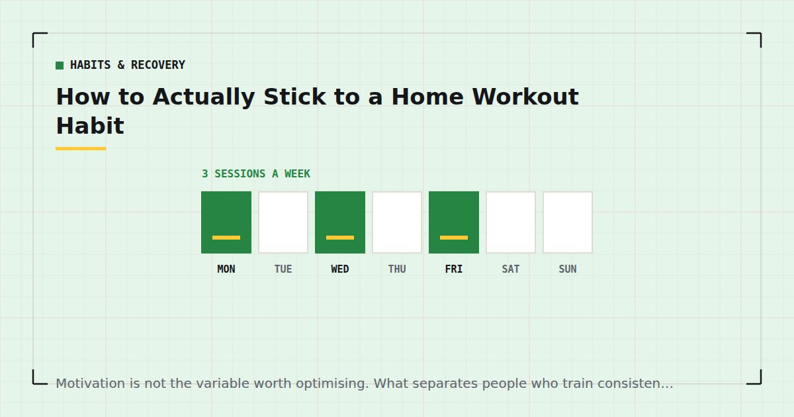

Habits & Recovery
How to Actually Stick to a Home Workout Habit
Motivation is not the variable worth optimising. What separates people who train consistently is not willpower — it is that they need less of it, and that is a design problem rather than a character one.

Most people who train at home know what to do. Very few articles about home fitness fail because the exercises were wrong. They fail because the sessions stopped happening, usually around week six, and no amount of programme design addresses that.
This is what actually determines whether a home routine survives, in rough order of how much each contributes.
The premise
People who train consistently are not more disciplined than people who do not. They have arranged their circumstances so that less discipline is required — the mat is already down, the session is already decided, the cue arrives without them thinking about it.
That reframe matters because it converts an unsolvable problem (be a different sort of person) into a solvable one (change five specific things about your setup). Everything below is one of those things.
It also explains why home training is harder than going to a gym despite being more convenient. A gym provides all of this externally: a cue in the form of the journey, a decision already made by having arrived, and social friction against leaving early. At home you have to build it.
Why home routines fail specifically
Four failure modes, all of which have fixes.
No external structure. Nothing about your living room says training happens here at seven. The environment provides no cue at all, and cues are what habits run on.
Very low cost to skipping. Skipping a gym session means having paid for something unused. Skipping a home session costs nothing and nobody notices.
Competing context. The room where you train is also the room where you relax, and the sofa is a considerably better-established habit than the mat.
Invisible progress. Without a barbell there is no number going up, so improvement is genuinely hard to perceive — which removes the feedback that would otherwise sustain the behaviour.
1. Cues, not times
The highest-leverage change available.
A time is a weak cue: it competes with everything else in that slot, it requires you to notice it, and it provides no momentum. An event that already happens without fail is a strong one, because the behaviour inherits its reliability.
The structure is after [existing reliable behaviour], I will [training]. After the kettle goes on. After I get home and take my shoes off. Before the shower I take anyway. After the children are in bed and before I sit down — and the word before is doing critical work there, because sitting down is the most common failed anchor by a distance.
Habits form through repetition in a consistent context, and borrowing an existing context is a shortcut to that. The detail, including how to pick an anchor that works and the ones that reliably do not, is in habit stacking for exercise.
2. Friction is the real variable
When a session does not happen, the cause is almost never a considered judgement that training is not worthwhile. It is a series of individually trivial obstacles.
The mat is in a cupboard. The coffee table needs moving. You are not sure what today's session is. Your kit is in the wash. Each costs fifteen seconds and a small amount of resolve, and together they are enough on a Wednesday in November.
The target is fifteen seconds from deciding to starting. Practically:
- The mat stays down, or stands in the corner of the room you train in. Not a cupboard, and never a different room.
- The training spot needs no clearing. A worse spot you can use immediately beats a better one you must prepare.
- The session is written where you can see it, so there is no decision about what to do.
- Equipment lives within arm's reach of the mat, in one open container rather than several lidded ones.
This is unglamorous and it is worth more than any amount of mindset work. The arrangements are in setting up a home gym corner and how to store home gym equipment in a tiny flat.
Sessions are almost never lost to a decision that training is not worth it. They are lost to a mat in a cupboard and a coffee table that needs moving.
3. The minimum session
Define, now, in writing, what you do on the worst evening of the month. Ten minutes, three exercises, two sets each.
The purpose is not the training, though ten minutes is genuine training and weekly volume drives adaptation regardless of how it was packaged.1 The purpose is to remove a decision. Without a defined minimum, the question on a bad evening is "is a reduced session worth doing?" — and when you are tired, that question is reliably answered no.
With one defined in advance, the question becomes "full or minimum?", which is a much easier question and has no skip option in it.
Every plan on this site has one for exactly this reason: the 4-week beginner plan, the three-day split and the parent session all specify a reduced version.
4. The two-day rule
Never miss two planned sessions in a row.
This is not arbitrary. Research on habit formation found that missing a single opportunity to perform a behaviour did not materially affect the process.2 One session is genuinely noise, and the guilt people attach to it is disproportionate to its effect.
The second is different. After two consecutive misses the cue weakens, the routine loses its place in the week, and the third becomes considerably easier to miss than the second was. Almost every abandoned routine can be traced to a second missed session that was not defended.
So: treat the first miss as unimportant and the second as the thing to prevent at almost any cost — including by reducing the session to the ten-minute minimum, training at a strange hour, or doing it badly. A poor session that happens protects the routine; a skipped one erodes it.
5. Plan for the bad week
Take the number of sessions you believe you can manage and subtract one.
Plans get made during periods of high motivation, which is precisely when your estimate of your own future availability is least accurate. A five-day plan made on a Sunday evening meets a genuinely busy fortnight and produces three sessions out of ten.
The physical cost of that is small. The psychological cost is large, because repeatedly missing your target builds the sense that the plan is not working, and that perception rather than the missing volume is what ends routines.
Three sessions completed produces a better outcome than five attempted, both in training terms and in the more important sense that hitting your target reinforces the behaviour. An extra session on a good week costs nothing psychologically; a planned session you missed costs a great deal. The templates are in the weekly home workout schedule, and the frequency question in how many days a week should you work out.
6. Measure, or progress is invisible
Six weeks of genuine improvement looks like nothing from the inside. Twelve counter push-ups becoming eight on the floor is a large change that feels like a drop from twelve to eight.
Ten seconds of writing per session — reps on your first exercise, the variation, sessions completed that week — is what makes that visible. And visible progress is one of the few things that sustains a behaviour once novelty has gone.
This matters most at exactly the point where routines fail: around week six, when the novelty has worn off and the visible change has not arrived. A notebook is the difference between "nothing is happening" and "I have gone from twelve to twenty" — see tracking progress without a gym or scale.
It also helps to know the real timeline in advance, since much of the disappointment at week six comes from expecting a three-month change in six weeks — see how long until you see results.
How long this takes
Longer than the figure everyone repeats, and knowing that is genuinely useful.
The Lally study modelling habit formation in the real world found a median of around 66 days to reach a plateau of automaticity, with substantial variation — roughly 18 days to well over 200 depending on the person and the behaviour, with more complex behaviours at the slower end.2
Two consequences. The "21 days to form a habit" claim is not supported by that work. And if you are six weeks in and it still requires effort, that is expected rather than evidence of failure — you are close to the median, not falling short of it.
Weeks five to eight are where most routines end, and the reasons are predictable enough to plan around. They are set out in beating the six-week drop-off.
If it has already failed twice
If the same routine has now ended twice at the same point, the routine is the variable rather than your discipline. Trying harder against the same design is the least promising available response.
Reduce the plan. Two sessions a week still meets the adult recommendation for muscle-strengthening activity,3 and a plan you complete is worth more than one you fail.
Change the slot. If sessions are scheduled when you are reliably exhausted, the slot is wrong. A lunch break is frequently the most defensible hour anyone owns — see the lunch break workout and morning vs evening workouts.
Attack the friction. If the mat lives in a cupboard, that is a solvable and specific problem.
Check whether it is actually fatigue. Feeling unable to face most sessions is information rather than weakness, and sleep is the most common and least investigated cause — see working out when you're exhausted and sleep and strength.
And if you have simply stopped, the return is easier than you fear and the approach is in how to restart after missing two weeks. Detraining is slower than people assume and regaining is faster than gaining.
The part that is not mechanical
Everything above is design. There is one element that is not, and it seems to matter more than its lack of measurability suggests.
There is a difference between "I am trying to exercise more" and "I train three times a week." The first describes an intention, and intentions are things you can fall short of. The second describes what you do, and it changes how a missed session is interpreted — not as evidence you are failing at something, but as a week in which a person who trains happened to miss one.
You cannot decide to have this, which is why most advice about it is useless. It accumulates from evidence, and the evidence is completed sessions. That is another argument for making the early sessions small: ten completed short sessions build the sense that you are someone who does this, and three abandoned long ones actively undermine it.
It is also an argument against the all-or-nothing framing that surrounds fitness. A ten-minute session on a bad evening is not a failed workout — it is a completed one, and it contributes to the accumulating evidence in a way that skipping does not.
Other people
Worth addressing because home training is unusually solitary and that has costs.
A gym provides incidental accountability: other people notice you, the journey is a commitment, and leaving early feels like something. Training in your living room provides none of that, which is part of why the same person can sustain a gym habit and not a home one.
Some substitutes work, for some people. Telling one person your target for the week. Training at the same time as a friend elsewhere, comparing afterwards. A shared log. What works less well is anything streak-based that punishes a scheduled rest day, which optimises for engagement rather than adaptation and can push people into training when they should not.
Be honest about whether you are someone accountability helps. If you have tried it twice and it has not worked, the answer is not a third system — it is cues and friction, which work regardless of temperament. The wider version of this is in why home workout motivation fails.
When life genuinely changes
A distinction worth drawing, because conflating these two things causes a lot of unnecessary guilt.
Some routines end because they were badly designed. Others end because something real happened — a new baby, a bereavement, an illness, a period of genuine crisis at work. The response to those is not a better anchor.
The useful move during those periods is to drop deliberately to a maintenance floor rather than letting the routine collapse and then having to rebuild it. Two sessions a week, or even one, held through a difficult few months, keeps the identity and the cue intact and preserves most of what you have built. Detraining is slower than people fear, and a maintained thread is far easier to expand than a broken one is to restart.
That is a plan adjustment, not a failure, and deciding it consciously is considerably better than discovering three months later that it happened by default.
Where to start
Do these five things this week, in this order. They take about twenty minutes in total and they are worth more than any programme change.
1. Pick your anchor. One existing behaviour that happens without fail, at a workable time, in roughly the right place. Write it down as a sentence: after X, I train.
2. Remove the friction. Put the mat where you train and leave it there. Clear the spot permanently. Choose somewhere that needs no preparation.
3. Write down your minimum session. Three exercises, two sets each, ten minutes. Put it where you will see it.
4. Pick a number and subtract one. Three sessions a week is right for most people.
5. Start a log. A note on your phone. Four lines a session.
Then run the 4-week beginner plan if you are new, or the three-day split if you are not, and change nothing for eight weeks except the difficulty of the movements — the ladders are in bodyweight exercise progressions.
None of this is about wanting it more. It is about needing to want it less, which is the only version of this problem that is actually solvable.
Frequently asked questions
How do I stick to a home workout routine?
Attach sessions to an existing reliable event rather than to a time, remove the friction between deciding and starting, define a ten-minute minimum session in advance, never miss twice in a row, plan fewer sessions than you think you can manage, and record your numbers.
Why do home workout routines fail?
Because nothing in a living room provides a cue, skipping costs nothing, the room competes with relaxing, and progress is invisible without a barbell. All four have specific fixes and none of them are about willpower.
How long does it take for exercise to become a habit?
Research modelling habit formation found a median of around 66 days to reach a plateau of automaticity, with a range from roughly 18 days to well over 200. If you are six weeks in and it still takes effort, that is expected.
What is the two-day rule?
Never miss two planned sessions in a row. Research found a single missed opportunity did not materially affect habit formation, but consecutive misses weaken the cue and the third becomes much easier to miss than the second.
Should I plan more or fewer workouts than I think I can do?
Fewer. Take the number you believe you can manage and subtract one. Three sessions completed produces a better outcome than five attempted, because hitting your target reinforces the behaviour while repeatedly missing it does the opposite.
What should I do on days I have no energy?
The minimum session — three exercises, two sets each, ten minutes — decided in advance and written down. Without a defined minimum, the question becomes whether a reduced session is worth doing, which when tired is reliably answered no.
What if I have already quit twice?
Change the design rather than your resolve. Reduce the plan, move the slot to a more defensible hour, attack the friction, and check whether fatigue and sleep are the underlying cause. If the same routine has ended twice at the same point, the routine is the variable.
Sources and further reading
- Schoenfeld BJ, Ogborn D, Krieger JW. “Dose-response relationship between weekly resistance training volume and increases in muscle mass: A systematic review and meta-analysis.” Journal of Sports Sciences, 2017;35(11):1073–1082. PubMed.
- Lally P, van Jaarsveld CHM, Potts HWW, Wardle J. “How are habits formed: Modelling habit formation in the real world.” European Journal of Social Psychology, 2010;40(6):998–1009. doi:10.1002/ejsp.674.
- World Health Organization. WHO Guidelines on Physical Activity and Sedentary Behaviour. 2020.
- NHS. Strength and Flex exercise plan.
- Bonnar D, Bartel K, Kakoschke N, Lang C. “Sleep Interventions Designed to Improve Athletic Performance and Recovery: A Systematic Review of Current Approaches.” Sports Medicine, 2018;48(3):683–703. PubMed.
Comments
Comments are not enabled yet. Add a hosted comment embed (Disqus, Commento, Giscus) inside this container when you are ready.